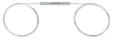
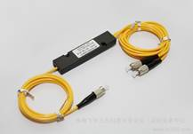

FBT/Fused/coupler fiber splitter

Blockless ABS box
Features:
Additional low loss
Polarization dependent loss is low
Double work window
Stability is good
Application:
Optical fiber communication system
FTTH
CATV
Performance indicators:
parameters |
P grade |
A grade |
|
Wavelength（nm） |
1310 and 1550 |
||
Working bandwidth （nm） |
±40 |
||
Typical additional loss （dB） |
≦0.10 |
≦0.20 |
|
Insertion loss （dB） |
50/50 |
≦3.6 |
≦3.8 |
40/60 |
≦4.4/2.6 |
≦4.9/2.9 |
|
30/70 |
≦5.7/1.9 |
≦6.3/2.1 |
|
20/80 |
≦7.6/1.2 |
≦8.4/1.4 |
|
10/90 |
≦11.0/0.65 |
≦12.0/0.8 |
|
5/95 |
≦14.2/0.4 |
≦15.5/0.5 |
|
2/98 |
≦18.5/0.25 |
≦19.5/0.4 |
|
1/99 |
≦21.5/0.2 |
≦23.5/0.35 |
|
Polarization dependent loss （dB） |
≦0.15 |
≦0.20 |
|
Directional （dB） |
≧55 |
||
Working temperature （℃） |
-20～ 70 |
||
Package information:
Structure of the |
1×2 or 2×2 |
||
Tail long degrees |
1mor customer requirement |
||
The tail fiber type |
250mmbare fiber |
900mmpine casing |
2mm、3mmpine casing |
Package size （￠×L）mm |
￠3.0×54 |
￠3.0×54 |
90×20×10 |